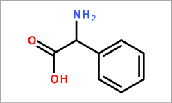

名 称:
乙醛酸
C A S:
563-96-2
分子式:
C2H2O3
外观与性状：白色至淡黄色结晶粉末
熔点：48-52oC
沸点：100°C
闪点：>110 °C
密度：1.33g/cm3
折射率：n20/D 1.414
左旋苯甘氨酸用途
本品兼醛和酸的性质, 可用于尿中蛋白质的测定；也用于合成一种高效亲双烯体亚硫酰基马来酸(sulfinylmaleate)，应用于对映选择性的Diels-Alder 环加成反应。
急救措施
一般的建议
请教医生。向到现场的医生出示此安全技术说明书。
吸入
如果吸入,请将患者移到新鲜空气处。如呼吸停止,进行人工呼吸。 请教医生。
皮肤接触
用肥皂和大量的水冲洗。 请教医生。
眼睛接触
用大量水彻底冲洗至少15分钟并请教医生。
食入
切勿给失去知觉者通过口喂任何东西。 用水漱口。 请教医生。
消防措施
灭火介质
灭火方法及灭火剂
用水雾,抗乙醇泡沫,干粉或二氧化碳灭火。
源于此物质或混合物的特别的危害
碳氧化物
给消防员的建议
如必要的话,戴自给式呼吸器去救火。
灭火介质
泄露应急处理
作业人员防护措施、防护装备和应急处置程序
使用个人防护用品。避免粉尘生成。避免吸入蒸气、烟雾或气体。保证充分的通风。
人员疏散到安全区域。避免吸入粉尘。
环境保护措施
不要让产品进入下水道。
泄漏化学品的收容、清除方法及所使用的处置材料
收集和处置时不要产生粉尘。 扫掉和铲掉。 放入合适的封闭的容器中待处理。
储运特性
安全操作的注意事项
避免接触皮肤和眼睛。避免形成粉尘和气溶胶。
在有粉尘生成的地方,提供合适的排风设备。
安全储存的条件,包括任何不兼容性
贮存在阴凉处。 使容器保持密闭，储存在干燥通风处。
吸湿的. 强吸湿的 充气保存